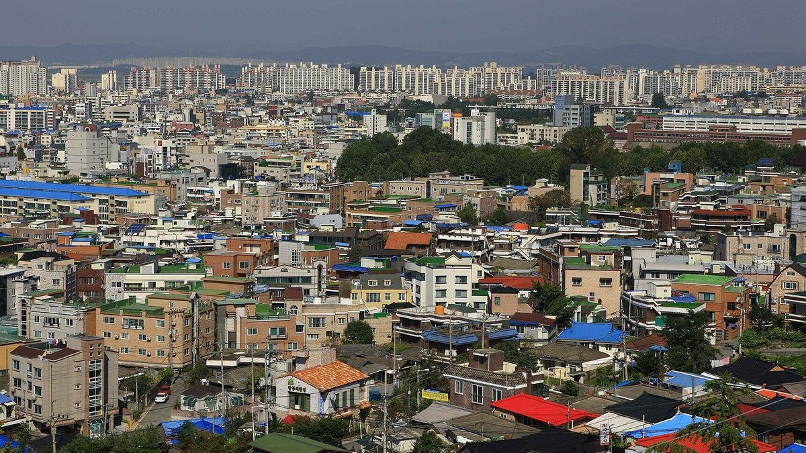

청주시, 2027~2031 제3차 지역에너지계획 5대 전략 마련…시민참여형 재생에너지·RE100 산단 추진

최종보고회서 시민과 산업이 함께 만드는 에너지 혁신도시 비전 제시…소비·참여·산업·시스템·융합 혁신, 전문가 의견 반영해 보완 뒤 세부 사업 단계 추진
충북 청주시가 2027~2031년 에너지정책의 밑그림이 될 제3차 지역에너지계획을 마련하면서 시민참여형 재생에너지 확대와 RE100 기반 저탄소 산업단지 조성을 5대 전략에 담았다. 시는 22일 임시청사 대회의실에서 신병대 청주부시장 주재로 '3차 지역에너지계획 수립용역 최종보고회'를 열고 '시민과 산업이 함께 만드는 에너지 혁신도시, 청주'를 비전으로 제시했다. 5대 전략은 고효율·저소비 에너지 체계를 만드는 소비혁신, 시민참여형 재생에너지를 넓히는 참여혁신, RE100 기반 저탄소 산업단지를 조성하는 산업혁신, 분산에너지로 지역에서 생산하고 소비하는 체계를 갖추는 시스템혁신, 수소·열·폐자원을 연계해 활용하는 융합혁신이다. 용역은 한국자치경제연구원이 지난 4월 맡아 중간보고회와 전문가 자문, 주민 설문조사를 거치며 약 7개월 동안 지역 에너지 현황과 정책 여건을 분석했다. 시는 보고회에서 나온 전문가 의견과 검토 결과를 반영해 계획을 보완한 뒤 세부 정책과 사업을 단계적으로 추진할 계획이다.
시민에너지 관점
5대 전략 가운데 하나로 시민참여형 재생에너지 확대가 들어간 것은 반가운 일이지만, 세부 과제로 내려가는 과정에서 시민 몫이 숫자로 정해지지 않으면 구호에 그칠 수 있다. 산업단지 RE100과 분산에너지를 앞세우면 결국 대기업과 발전사 중심의 사업이 될 것이라는 우려도 나올 수 있지만, 산단 지붕과 공공부지 발전소에 시민과 주민의 지분을 넣으면 산업 전환과 시민 소득이 함께 갈 수 있다. 미국 밀워키 주민단체 월넛웨이가 1MW 주민 소유 태양광에서 출발해 8년간 주민 소유 태양광 50MW라는 장기 구상을 세운 것처럼, 시민이 발전소의 주인이 되는 목표를 기간과 용량으로 못 박을 때 계획은 지역의 자산이 된다. 청주시는 계획을 보완하는 이번 단계에서 시민 소유 재생에너지 목표 용량과 산단 RE100 사업의 시민 지분 원칙부터 담아야 한다.
출처: 충북넷 2026-10-22 신수빈 원문 보기
清州市、2027〜2031年の第3次地域エネルギー計画で5大戦略…市民参加型再エネとRE100産業団地を推進
最終報告会で市民と産業が共につくるエネルギー革新都市のビジョンを提示…消費・参加・産業・システム・融合の5つの革新、専門家の意見を反映して補完後に個別事業を段階的に推進
忠清北道清州（チョンジュ）市は、2027〜2031年のエネルギー政策の青写真となる第3次地域エネルギー計画をまとめ、市民参加型の再生可能エネルギーの拡大とRE100に基づく低炭素産業団地の造成を5大戦略に盛り込んだ。市は22日、仮庁舎の大会議室でシン・ビョンデ清州副市長の主宰により「第3次地域エネルギー計画策定業務最終報告会」を開き、「市民と産業が共につくるエネルギー革新都市、清州」をビジョンとして示した。5大戦略は、高効率・低消費のエネルギー体系をつくる消費革新、市民参加型の再エネを広げる参加革新、RE100に基づく低炭素産業団地を造成する産業革新、分散型エネルギーで地域で生産・消費する体系を整えるシステム革新、水素・熱・廃資源を連携して活用する融合革新だ。業務は韓国自治経済研究院が4月に受託し、中間報告会や専門家への諮問、住民アンケートを経て約7か月間、地域のエネルギーの現状と政策条件を分析した。市は報告会で出た専門家の意見と検討結果を反映して計画を補完したうえで、個別の政策と事業を段階的に進める計画だ。
市民エネルギーの視点
5大戦略の一つに市民参加型の再エネ拡大が入ったことは歓迎すべきだが、個別の課題に落とし込む過程で市民の取り分が数字で定められなければ、スローガンに終わりかねない。産業団地のRE100や分散型エネルギーを前面に出せば、結局は大企業や発電会社が中心の事業になるとの懸念もありうるが、産業団地の屋根や公共用地の発電所に市民と住民の持ち分を組み込めば、産業の転換と市民の所得は両立できる。米ミルウォーキーの住民団体ウォルナット・ウェイ（Walnut Way）が1MWの住民所有太陽光から出発し、8年で住民所有の太陽光50MWという長期構想を掲げたように、市民が発電所の所有者になる目標を期間と容量で明記するとき、計画は地域の資産になる。清州市は計画を補完する今の段階で、市民所有の再エネの目標容量と、産業団地RE100事業における市民持ち分の原則をまず盛り込むべきだ。
出典: Chungbuk.net 2026-10-22 Shin Su-bin 原文を読む
清州市制定2027至2031年第三次地区能源规划五大战略…推进市民参与型可再生能源和RE100产业园区
最终报告会提出市民与产业共建能源创新城市愿景…消费、参与、产业、系统、融合五项创新，吸收专家意见完善后分阶段推进具体项目
忠清北道清州市制定了作为2027至2031年能源政策蓝图的第三次地区能源规划，把扩大市民参与型可再生能源和建设基于RE100的低碳产业园区纳入五大战略。清州市22日在临时市政厅大会议室举行由副市长Shin Byung-dae主持的"第三次地区能源规划编制课题最终报告会"，提出"市民与产业共建的能源创新城市——清州"的愿景。五大战略包括：构建高效低耗能源体系的消费创新、扩大市民参与型可再生能源的参与创新、建设基于RE100的低碳产业园区的产业创新、以分布式能源建立本地生产和消费体系的系统创新，以及联动利用氢能、热能和废弃资源的融合创新。该课题由韩国自治经济研究院于4月承接，经过中期报告会、专家咨询和居民问卷调查，用约7个月时间分析了当地能源现状和政策条件。清州市计划吸收报告会上的专家意见和审查结果完善规划，然后分阶段推进具体政策和项目。
市民能源视角
扩大市民参与型可再生能源被列为五大战略之一值得欢迎，但如果在细化为具体课题的过程中没有用数字明确市民份额，就可能流于口号。有人可能担心，突出产业园区RE100和分布式能源，最终会变成以大企业和发电公司为中心的项目；但如果在园区屋顶和公共用地电站中纳入市民和居民的股份，产业转型和市民收入就可以并行。正如美国密尔沃基居民团体Walnut Way从1MW居民所有太阳能起步，提出8年内实现50MW居民所有太阳能的长期构想那样，当市民成为电站主人的目标以期限和容量明确下来时，规划才会成为地方的资产。清州市应在完善规划的这一阶段，首先写入市民所有可再生能源的目标容量，以及产业园区RE100项目中市民持股的原则。
来源: Chungbuk.net 2026-10-22 Shin Su-bin 查看原文
Cheongju sets five strategies in third local energy plan for 2027-2031, backing citizen-participation renewables and RE100 industrial parks
Final briefing presents vision of an energy innovation city built by citizens and industry; consumption, participation, industry, system and convergence strategies to be refined with expert input before projects roll out in stages
Cheongju in North Chungcheong Province has drawn up its third local energy plan, the blueprint for its 2027-2031 energy policy, with expanding citizen-participation renewable energy and building low-carbon RE100 industrial parks among five core strategies. At a final briefing on the planning study chaired by Deputy Mayor Shin Byung-dae in the main conference room of the temporary city hall on the 22nd, the city presented the vision of "Cheongju, an energy innovation city built together by citizens and industry." The five strategies are consumption innovation for a high-efficiency, low-consumption energy system; participation innovation to expand citizen-participation renewables; industrial innovation to create RE100-based low-carbon industrial parks; system innovation to build local production and consumption through distributed energy; and convergence innovation linking hydrogen, heat and waste resources. The Korea Institute of Local Autonomy and Economy took on the study in April and analyzed local energy conditions and the policy environment over about seven months, including an interim briefing, expert consultations and a resident survey. The city plans to refine the plan with the experts' comments and review findings from the briefing and then carry out detailed policies and projects in stages.
Citizen Energy View
It is welcome that expanding citizen-participation renewables is one of the five strategies, but unless the citizens' share is set in numbers as the plan is broken down into detailed tasks, it may end up as a slogan. Some may worry that putting RE100 industrial parks and distributed energy first will in the end produce projects centered on large companies and power utilities, but building citizen and resident stakes into plants on industrial-park rooftops and public land would let industrial transition and citizen income go together. As the Milwaukee community group Walnut Way set out from a 1MW resident-owned solar project toward a long-term vision of 50MW of resident-owned solar over eight years, a plan becomes a community asset when the goal of citizens owning power plants is pinned down by timeline and capacity. At this stage of refining the plan, Cheongju should first write in a target capacity for citizen-owned renewables and a principle of citizen stakes in its industrial-park RE100 projects.
Source: Chungbuk.net 2026-10-22 Shin Su-bin Read the original